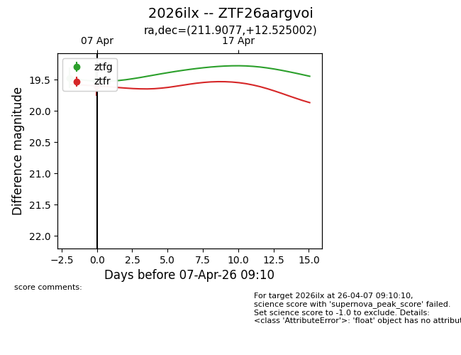
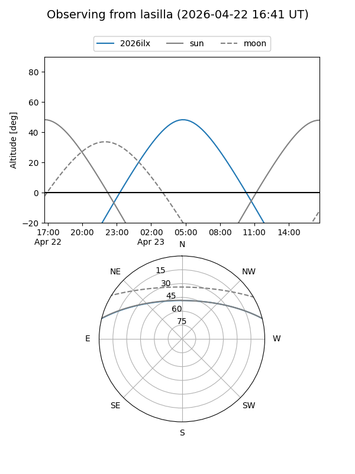
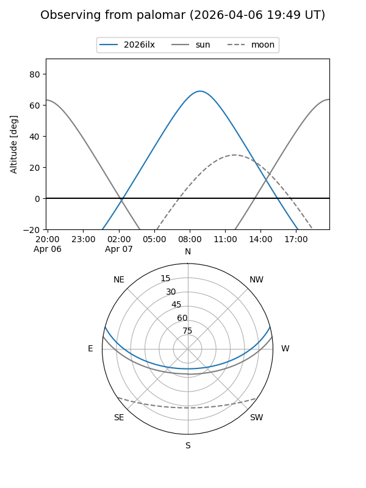
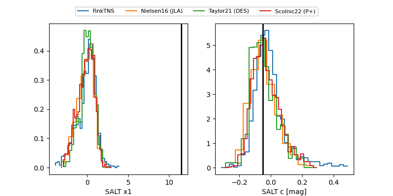

2026ilx
Target 2026ilx at 2026-04-07 09:14
Aliases and brokers:
FINK: link
Lasair: link
ALeRCE: link
TNS: link
YSE: link
alt names
ZTF26aargvoi (ztf,fink_ztf)
2026ilx (tns,yse)
Coordinates:
equatorial (ra, dec) = 211.9077,+12.52500
equatorial (HMS+DMS) = 14:07:37.84,+12:31:30.01
galactic (l, b) = (357.3726,+66.94404)
Flags:
Photometry:
last ztfg=19.52, ztfr=19.60
2 ztfg, 1 ztfr detections
Lightcurve

Visibility


Additional plots
